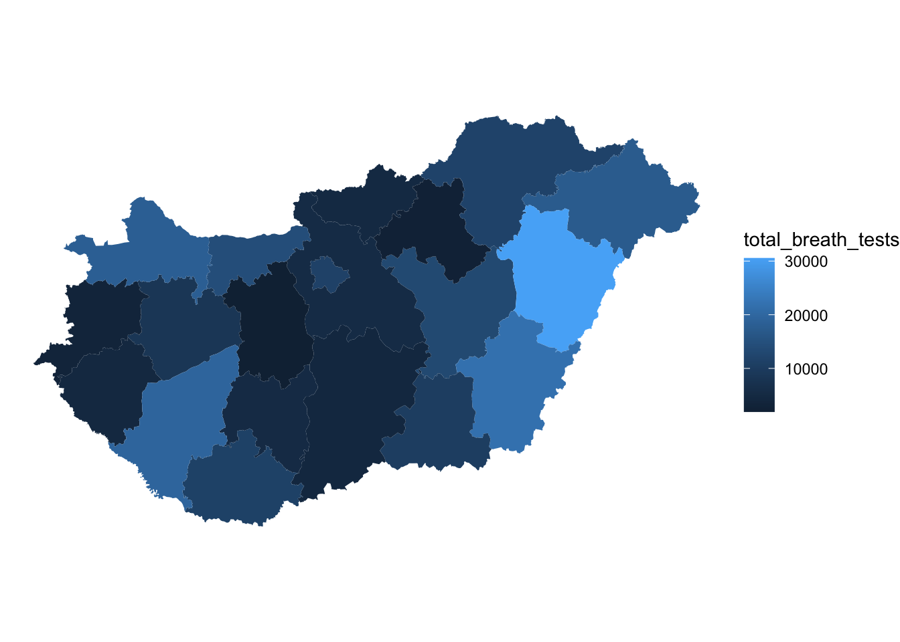
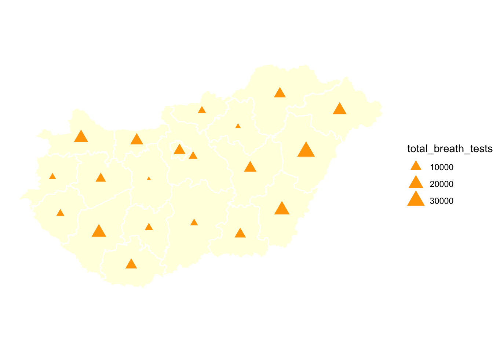
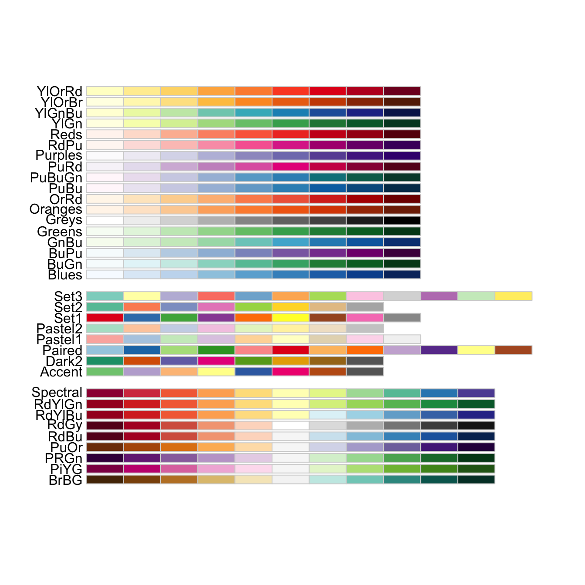
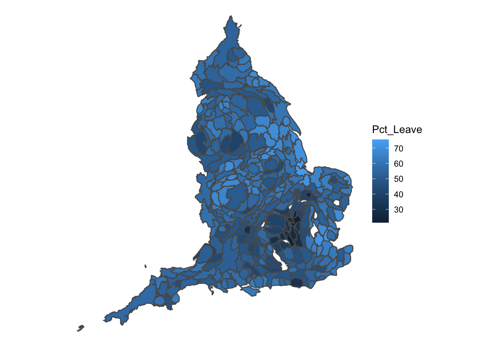
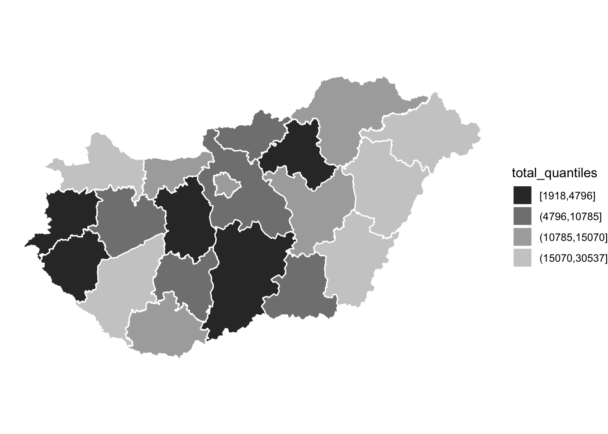
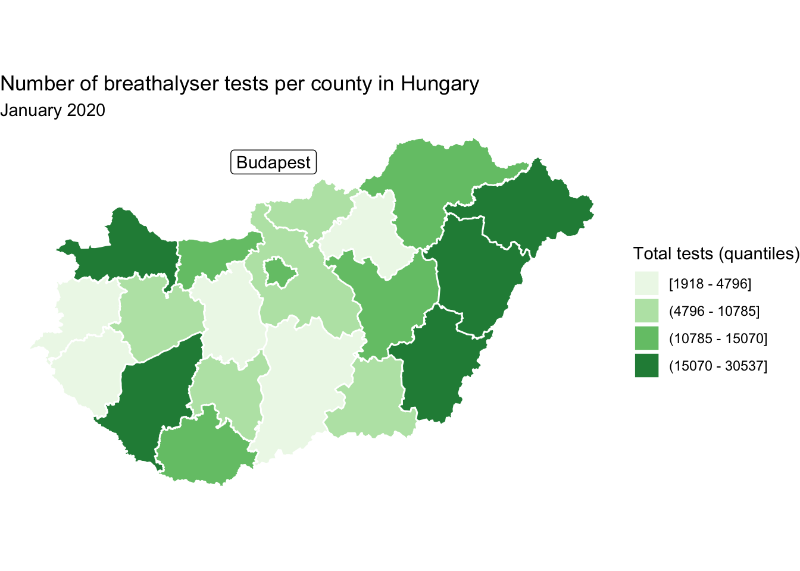
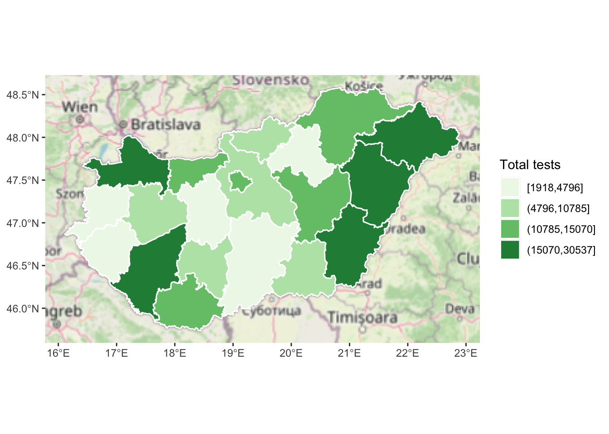

Chapter 6 Chapter 5: Visualisation: good cartographic design
6.1 Introduction
This chapter aims to focus on introducing good practice in map design and presentation. When putting a map together you need to think about its intended audience (their level of expertise, whether you want them to interact with the map), purpose, and format of delivery (e.g., printed, web, projected in a screen, etc). There are many design decisions you need to consider: fonts, labels, colour, legends, layout, etc. In this chapter we provide a general introduction to some basic design principles for map production. These themes, and the appropriate election of symbol representation, are the subject matter of cartography, the art and science of map making. Within cartography a considerable body of research and scholarship has focused on studying the visual and psychological implications of our mapping choices. As noted on previous chapters one of the problems with maps is that powerful as a tool as they, they can lead to misunderstanding. What the mapmaker chooses to emphasise and what the map reader see may not be the same thing. We will work you through an example of a fairly basic map and the process of taking to a point where it could be ready for presentation to an audience other that yourself.
In this chapter we will be working with some data published by Hungarian police available online http://www.police.hu/hu/a-rendorsegrol/statisztikak/kozrendvedelem. Specifically we will be looking at some statistics related to drink driving. Drunk driving is one of a number of problems police confront that relate to impaired and dangerous driving. Hungary has a strict drink driving policy, with the maximum drink diving limit being 0.0 BAC. Most European countries are at 0.5 BAC, while the UK is 0.8 (except 0.5 for Scotland). We have record for each county the number of brethalyser checks carried out, and the number of these which returned a positive result. Let’s read in this data from January 2020 (taken from here),
library(sf)
library(readr)
library(dplyr)
hungary <- st_read("data/hungary.geojson")## Reading layer `hungary' from data source `/Users/reka/Desktop/crime_mapping/crime_mapping_knitting/data/hungary.geojson' using driver `GeoJSON'
## Simple feature collection with 20 features and 7 fields
## Geometry type: POLYGON
## Dimension: XY
## Bounding box: xmin: 16.11389 ymin: 45.73713 xmax: 22.89771 ymax: 48.58526
## Geodetic CRS: WGS 84drink_driving <- read_csv("data/drink_driving.csv")##
## ── Column specification ────────────────────────────────────────────────────────
## cols(
## name = col_character(),
## total_breath_tests = col_double(),
## positive_breath_tests = col_double()
## )hu_dd <- left_join(hungary, drink_driving, by = c("name" = "name"))We can now use this example to talk through the important principles of good visualisation of spatial data. We draw specifically from two areas of research: cartography and data visualisation.
Cartographers have always been concerned about the appearance of maps and how the display marries form with function Field and Demaj (2012). As there is no definitive definition for what is meant by cartographic design it can be challenging to evaluate what makes good design. However there are themes and elements which can be used to guide the map maker, and offer points of reflection to encourage thoughtful designs.
Te primary aim of maps is the communication of information in an honest and ethical way. This means each map should have a clear goal and know its audience, show all relevant data and not use the data to lie or mislead (Dent_2009?). It should also be reproducible, transparent, cite all data sources, and consider diversity in its audience (Dent_2009?). So what does that mean for specifically implementing these into practice. While a good amount of critical thought from the map maker will be required, there are aids we can rely upon. For example, (Field_2007?) developed a map evaluation checklist which you can access here: http://downloads.esri.com/MappingCenter2007/arcGISResources/more/MapEvaluationGuidelines.pdf. The questions fall into three broad categories: Cartographic Requirements such as what is the rationale for the map, who are the audience?. Cartographic Complication and Design such as are all the relevant features included and do the colours, symbold, and other features legible and appropriate to achieve the map’s objectives? And finally, Map Elements and Page Layout which tackle some specific features such as orientation indicator, scale indicator, legend, titles and subtitles, and production notes. We will discuss these elements in this chapter to some degree, and the recommended reading will guide the reader to further advice on these topics.
Data visualisation is a somewhat newer field, however, it seems to encompass the same guiding principles when consdiering what makes good design. According to Kirk (2016) three principles offer a guide when deciding what makes a good data visualisation. It must be:
- Trustworthy
- Accessible, and
- Elegant
The first principle, of trust speaks to the integrity, accuracy, and legitimacy of any data visualisation we produce. Kirk (2016) suggests this principle to be held above all else, as our primary goal is to communicate truth (as far as we know it) and avoid at all cost to present what we know to be misleading content. Accessibility refers to our visualisation being useful, understandable, and unobtrusive, as well as accessible for all users. There are many things to consider in your audience such as dynamic of need (do they have to engage with your visualisation, or is it voluntary?), subject-matter knowledge are they experts in the area, are they lay people to whom you must communicate a complex message?, and many other factors (see Kirk (2016)). Finally, elegance refers to aesthetics, attention to detail, and an element of doing as little design as possible - meaning a certain invisibility whereby the viewer of your visualisation focussed on the content, rather than the design - that is the main point is the message that you are trying to communicate with your data!
In this chapter, we will aim to bring together the above principles, and work through a practical example of how to apply this to achieve good visualisations. Specifically we will cover:
- data representation
- colour
- text
- titles and subtitles
- legend
- annotation
- production notes
- composition
- orientation indicator
- scale indicator
- borders
- inset maps
- interactivity (??)
6.2 Data representation
6.2.1 Thematic maps
We’ve been working with thematic maps thus far. There are many decisions that go into making a thematic map, which we have explored at length in the previous chapters, such as how (and whether) to bin your data (Chapter 3) and how (or whether) to transform your polygons (Chapter 4). These are important considerations on how to represent your data to your audience, and require a technical understanding, not only an aesthetic one. So please do read over those chapters carefully when thinking about how to represent your data.
We can use the ggplot2 package to plot our thematic map, using the geom_sf() function. To shade each polygon with the values of a specific variable, we use the fill = argument within the aes() (aesthetics) function. Most simply:
library(ggplot2)
ggplot(data = hu_dd) +
geom_sf(aes(fill = total_breath_tests)) +
theme_minimal()
We can change the colour and size of the borders of our polygons with arguments inside the geom_sf() function, but outside the aes() function, as long as we’re not using our data to define these. For example we can change the line width (lwd =) to 0, eliminating bordering lines between our polygons:
ggplot(data = hu_dd) +
geom_sf(aes(fill = total_breath_tests), lwd = 0) +
theme_minimal()
Or we can change the colour of the borders with the col = argument:
ggplot(data = hu_dd) +
geom_sf(aes(fill = total_breath_tests), lwd = 0.5, col = "white") +
theme_minimal()
Here we have a continuous fill for our values, however we can employ our learning from Chapter 3 and apply a classification system, such as quantiles. To do this we might create a new variable which contains the quantiles of our numeric variable, and then use that as our fill =.
hu_dd <- hu_dd %>%
mutate(total_quantiles = cut(total_breath_tests, breaks = round(quantile(total_breath_tests),0), include.lowest = TRUE, dig.lab=10))
ggplot(data = hu_dd) +
geom_sf(aes(fill = total_quantiles), lwd = 0.5, col = "white") +
theme_minimal()The colour scheme is terrible, but we will talk about colour in the next section, so we can forgive that for now…
6.2.2 Symbols
You might not want to display your map as thematic map, you may want to use symbols. Again we explored this in Chapter 3, here is one way you can use graduated symbol map with ggplot(). You can take the centroid of each county polygon using the st_centroid() function from the sf package, and then when mapping with geom_sf(), within the aes() function specity the size = argument to the variable you wish to visualise:
ggplot(data = hu_dd) +
geom_sf() +
geom_sf(data = st_centroid(hu_dd), aes(size = total_breath_tests)) +
theme_minimal()## Warning in st_centroid.sf(hu_dd): st_centroid assumes attributes are constant
## over geometries of x## Warning in st_centroid.sfc(st_geometry(x), of_largest_polygon =
## of_largest_polygon): st_centroid does not give correct centroids for longitude/
## latitude data Like with the thematic map you can play around with colour and shape:
Like with the thematic map you can play around with colour and shape:
ggplot(data = hu_dd) +
geom_sf(fill = "light yellow", col = "white") +
geom_sf(data = st_centroid(hu_dd), aes(size = total_breath_tests), col = "orange") +
theme_minimal()## Warning in st_centroid.sf(hu_dd): st_centroid assumes attributes are constant
## over geometries of x## Warning in st_centroid.sfc(st_geometry(x), of_largest_polygon =
## of_largest_polygon): st_centroid does not give correct centroids for longitude/
## latitude data
ggplot(data = hu_dd) +
geom_sf(fill = "light yellow", col = "white") +
geom_sf(data = st_centroid(hu_dd), aes(size = total_breath_tests), col = "orange", shape = 17) +
theme_minimal()## Warning in st_centroid.sf(hu_dd): st_centroid assumes attributes are constant
## over geometries of x## Warning in st_centroid.sfc(st_geometry(x), of_largest_polygon =
## of_largest_polygon): st_centroid does not give correct centroids for longitude/
## latitude data
ggplot(data = hu_dd) +
geom_sf(fill = "light yellow", col = "white") +
geom_sf(data = st_centroid(hu_dd), aes(size = total_breath_tests), col = "orange", shape = 13) +
theme_minimal()## Warning in st_centroid.sf(hu_dd): st_centroid assumes attributes are constant
## over geometries of x## Warning in st_centroid.sfc(st_geometry(x), of_largest_polygon =
## of_largest_polygon): st_centroid does not give correct centroids for longitude/
## latitude data
How you choose to represent your data will depend on your decisions to the questions asked above about audience, message, integrity, and so on.
6.2.3 Rate v count
In chapter 3 we have discussed this already in great detail, so again I will not dwell on this, but it is important that your data are meaningful and easy to interpret. We might, in this case for example, want to consider the rate of positive breath tests per test carried out in each county. To compute this, we might want to consider the proportion of positive results on the breatalyser tests (where the person had been drinking and their result is over the limit). To compute this, we can simply divide the positive results by the total test, and multiply by 100. We also include the round() function in there
hu_dd <- hu_dd %>%
mutate(pos_rate = round(positive_breath_tests/total_breath_tests*100,1))We can see the county with the highers proportion of test yielding drink drivers is Pest megye with 3 %, while the county with the lowest is Hajdú-Bihar with 0.2 %.
We can visualise this rate on our thematic map in exactly the same way as the count data, but using our new variable in the fill = argument:
ggplot(data = hu_dd) +
geom_sf(aes(fill = pos_rate), lwd = 0.5, col = "white") +
theme_minimal()
But with a graduated symbol map we can get a little more creative. Sure, one approach may be to once again change the size of the symbol, but we could get a little more creative and use charts. For example there is the library scatterpie which has the function geom_scatterpie() which allows us to present our ratios in pie charts.
To use this function, we need our data to be in a dataframe which has separate columns for latitude and longitude (rather than a geometry object), where each observation has a unique id, and where we have a separate column for each proportion we wish to visualise.
To create this, we first need to get the centroid of each polygon to get our longitude and latitude. We also need to calculate the number of negative breath tests. We then need to extract the coordinates into longitude and latitude columns, and finally we can drop the geometry and keep only the columns we need for this new dataframe.
scatter_map_df <- hu_dd %>%
mutate(cent_lng = st_coordinates(st_centroid(.))[,1], # extract centroid longitude
cent_lat = st_coordinates(st_centroid(.))[,2], # extract centroid latitude
neg_tests = total_breath_tests - positive_breath_tests) %>% # calculate negative tests
st_drop_geometry() %>% # remove the geometry column
dplyr::select(cent_lng, cent_lat, osm_id, positive_breath_tests, neg_tests) # keep only necessary columnsWe now have this new dataframe which has coordinates for the centroid of each polygon, and we can use the geom_scatterpie() function from the scatterpie package to plot a pie chart of the proportion of positive to negative breath tests in each county in Hungary:
ggplot(data = hu_dd) +
geom_sf(data = hu_dd, fill = "light yellow", col = "white") +
scatterpie::geom_scatterpie(data=scatter_map_df, aes(x=cent_lng, y=cent_lat, group=osm_id), cols=c("positive_breath_tests", "neg_tests")) +
theme_minimal()
In this case, it’s not super informative to visualise this, as discussed above our positive rates range between 0.2 %, and 3 %. However with more evenly distributed proportions this may be something to try.
6.3 Colour
When choosing a colour palette, the first thing to consider is what kind of colour scheme we need. This will depend on the variable we are trying to visualise. We go back, once again, to the first week of the course, where we discussed Levels of Measurement. Remember those? Still important!
Depending on the kind of varaible we want to visualise, we might want a Qualitative colour scheme (for categorical nominal variables), a Sequential colour scheme (for categorial ordinal, or for numeric variables) or a Diverging colour scheme (for categorial ordinal, or for numeric variables).
For qualitative colour schemes, we want each category (each value for the variable) to have a perceptible difference in colour. For sequential and diverging color schemes, we will want mappings from data to color that are not just numerically but also perceptually uniform.
- sequential scales (also called gradients) go from low to high saturation of a colour.
- diverging scales represent a scale with a neutral mid-point (as when we are showing temperatures, for instance, or variance in either direction from a zero point or a mean value), where the steps away from the midpoint are perceptually even in both directions.
- qualitative scales identify as different the different values of your categorical nominal variable from each other.
For your sequetial and diverging scales, the goal in each case is to generate a perceptually uniform scheme, where hops from one level to the next are seen as having the same magnitude.
Of course, perceptual uniformity matters for your qualitative scales for your unordered categorical variables as well. We often use color to represent data for different countries, or political parties, or types of people, and so on. In those cases we want the colors in our qualitative palette to be easily distinguishable, but also have the same valence for the viewer. Unless we are doing it deliberately, we do not want one color to perceptually dominate the others.
The main message here is that you should generally not put together your color palettes in an ad hoc way. It is too easy to go astray. In addition to the considerations we have been discussing, there we might also want to avoid producing plots that confuse people who are colour blind, for example, and color blindness comes in a variety of forms. Fortunately for us, almost all of the work has been done for us already. Different color spaces have been defined and standardized in ways that account for these uneven or nonlinear aspects of human color perception.
A good resource is colorbrewer. We have come across (Brewer_2016?) in Chapter 3. Colorbrewer is a resource developed by Cynthia Brewer and colleagues in order to help implement good colour practice in data visualisation and cartography. This site offers many colour schemes we can make use of for our maps, which are easily integrated into R using the Rcolorbrewer package.
library(RColorBrewer)Once you have the package loaded, we can look at all the associated palettes with the function display.brewer.all().
display.brewer.all()
The above gives a wide choice of pallettes, and while they are applicable to all sorts of data visualisations, they were created especially for the case of thematic maps.
We might use the above code to pick a palette we like. We might then want to examine the colours more closely. To do this we can use the display.brewer.pal() function, and specify n= - the number of colours we need, as well as the palette name with name =:
display.brewer.pal(n = 5, "Spectral")
Let’s go back to our thematic map of the quantiles of total breath tests per county. We might be interested in this map to show distribution of policing activity for example. We made this map earlier with the default colour scheme, which didn’t really communicate to use the graduated nature of our data we were visualising. To properly do this, we may imagine using a seqantial scale. We can use one of the sequential scales available within RColorBrewer with adding the scale_fill_brewer() function to our ggplot. In this function we can specify the type= parameter, i.e. if we want to use sequential, divergining, or qualitative colour schemes (specified as either “seq” (sequential), “div” (diverging) or “qual” (qualitative)). We can then specify our preferred palette with the palette = argument.
Let’s demonstrate here with the “YlOrRd” sequential palette:
ggplot(data = hu_dd) +
geom_sf(aes(fill = total_quantiles), lwd = 0.5, col = "white") +
scale_fill_brewer(type = "seq", palette = "YlOrRd") +
theme_minimal()
This looks much better, and communicates our message much more clearly. Is this accessible to our colourblind colleagues? Earlier, when we asked to view all the palettes with the display.brewer.all() function, we did not specify any arguments. However, we can do so in order to filter only those palettes which are accessible for all audiences. We can include the parameter colorblindFriendly = to do so:
display.brewer.all(colorblindFriendly = TRUE)
You can see there are a few palettes missing from our earlier results, when we did not specify this requirement. My recommendation is to always use one of these palettes.
Another way to ensure that we are making accessible maps is to use greyscale (if your map is being printed, this may also save some money). To introduce a greyscale palette, you can use the function scale_fill_grey() from the ggplot2 package:
ggplot(data = hu_dd) +
geom_sf(aes(fill = total_quantiles), lwd = 0.5, col = "white") +
scale_fill_grey() +
theme_minimal()
Sometimes you might prefer such a map. However, do keep in mind, a number of studies have shown the desirability of monochrome colour (over greyscale) thematic maps, as they are linked to less observer variability in interpretation (Lawson (2021b)). So you might want to use something like this instead:
ggplot(data = hu_dd) +
geom_sf(aes(fill = total_quantiles), lwd = 0.5, col = "white") +
scale_fill_brewer(type = "seq", palette = "Greens") +
theme_minimal()Overall, the key thing is to be conscious with the colours you choose to represent your data. Make sure that they are accessible for all audiences, and best represent the patterns in your data which you want to communicate to your audiences.
6.4 Text
There are important pieces of information with every map which are represented by text.
6.4.1 Titles and subtitles
To give your map a title and subtitle, you can use the appropriate functions from the ggplot2() package.
ggplot(data = hu_dd) +
geom_sf(aes(fill = total_quantiles), lwd = 0.5, col = "white") +
scale_fill_brewer(type = "seq", palette = "Greens") +
theme_minimal() +
ggtitle("Number of breathalyser tests per county", subtitle = "January 2020")
6.4.2 Legend
ggplot(data = hu_dd) +
geom_sf(aes(fill = total_quantiles), lwd = 0.5, col = "white") +
scale_fill_brewer(type = "seq", palette = "Greens", name = "Total tests") +
theme_minimal() +
ggtitle("Number of breathalyser tests per county", subtitle = "January 2020")
We can also change the levels. For example, we can replace the “,” with a " - " if we’d like using the gsub() function, and assign the new levels object in the labels = parameter of the scale_fill_brewer() function:
new_levels <- gsub(","," - ",levels(hu_dd$total_quantiles))
ggplot(data = hu_dd) +
geom_sf(aes(fill = total_quantiles), lwd = 0.5, col = "white") +
scale_fill_brewer(type = "seq", palette = "Greens", name = "Total tests", labels = new_levels) +
theme_minimal() +
ggtitle("Number of breathalyser tests per county", subtitle = "January 2020")
Or we could completely rename them if we liked:
new_levels <- c("< 4796", "4796 to < 10785", "10785 to < 15070", "> 15070")
ggplot(data = hu_dd) +
geom_sf(aes(fill = total_quantiles), lwd = 0.5, col = "white") +
scale_fill_brewer(type = "seq", palette = "Greens", name = "Total tests", labels = new_levels) +
theme_minimal() +
ggtitle("Number of breathalyser tests per county", subtitle = "January 2020")
You can change the labels however you would like, but do keep in mind any loss of information you may introduce. For example with this second version, we no longer know what are the minimum and maximum balues on our map, as we’ve removed that information with our new levels. Again, no wrong answers here, but whatever best fits the data and the purpose of the map.
6.4.3 Annotation
Sometimes you might want to include some textual information on your map as well. From ggplot2 versions v.3.1.0 the functions geom_sf_text() and geom_sf_label() make it very smooth for us to do this.
ggplot(data = hu_dd) +
geom_sf(aes(fill = total_quantiles), lwd = 0.5, col = "white") +
scale_fill_brewer(type = "seq", palette = "Greens", name = "Total tests") +
geom_sf_label(aes(label = name)) +
theme_minimal() +
ggtitle("Number of breathalyser tests per county", subtitle = "January 2020")## Warning in st_point_on_surface.sfc(sf::st_zm(x)): st_point_on_surface may not
## give correct results for longitude/latitude data
You may notice there is some overlapping here which renders some names unreadable. Well while there is work in this space to develop the function geom_sf_label_repel() at the time of writing this is not yet available. However this application of the geom_label_repel() function from the ggrepel package advised by (Yutani_2018?) achieves the same outcome:
library(ggrepel)
ggplot(data = hu_dd) +
geom_sf(aes(fill = total_quantiles), lwd = 0.5, col = "white") +
scale_fill_brewer(type = "seq", palette = "Greens", name = "Total tests") +
geom_label_repel(data = hu_dd, aes(label = name, geometry = geometry), stat = "sf_coordinates", min.segment.length = 0) +
theme_minimal() +
ggtitle("Number of breathalyser tests per county", subtitle = "January 2020") ## Warning in st_point_on_surface.sfc(sf::st_zm(x)): st_point_on_surface may not
## give correct results for longitude/latitude data
This map looks really busy, you might want to include only a few labels, which are of interest. For example, you might want to label only those which are in the top quartile:
ggplot(data = hu_dd) +
geom_sf(aes(fill = total_quantiles), lwd = 0.5, col = "white") +
scale_fill_brewer(type = "seq", palette = "Greens", name = "Total tests") +
geom_sf_label(data = hu_dd %>% filter(total_breath_tests >= 15070), aes(label = name)) +
theme_minimal() +
ggtitle("Number of breathalyser tests per county", subtitle = "January 2020")## Warning in st_point_on_surface.sfc(sf::st_zm(x)): st_point_on_surface may not
## give correct results for longitude/latitude data
Or you want to specifically highlight a county of interest, let’s say Budapest. In this case, we might actually want to keep our annotation off the map. We can do this by using the nudge_x and nudge_y parameters of the geom_sf_label() function.
ggplot(data = hu_dd) +
geom_sf(aes(fill = total_quantiles), lwd = 0.5, col = "white") +
scale_fill_brewer(type = "seq", palette = "Greens", name = "Total tests") +
geom_sf_label(data = hu_dd %>% filter(name == "Budapest"), aes(label = name), nudge_y = 0.9, nudge_x = -0.1) +
theme_minimal() +
ggtitle("Number of breathalyser tests per county", subtitle = "January 2020")## Warning in st_point_on_surface.sfc(sf::st_zm(x)): st_point_on_surface may not
## give correct results for longitude/latitude data
But this floating label is a little ambiguous. We might want to use an arrow to point out Budapest on the map. To do this, we can use geom_curve() within ggplot2. We will need two sets of x and y values for this segment, the start point (x and y) and the end point (xend and yend). The end point will be the coordinates where we want the arrow pointing to. This would be some x,y pair within Budapest. We can use the st_coordinates() function once again the extract the centroid, this time of the Budapest polygon. Let’s extract the longitude of the centroid into an object called bp_x for our x value, and the latitude of the centroid into an object called bp_y for our y value.
bp_x <- hu_dd %>% filter(name == "Budapest") %>%
mutate(cent_lng = st_coordinates(st_centroid(.))[,1]) %>%
pull(cent_lng)## Warning in st_centroid.sf(.): st_centroid assumes attributes are constant over
## geometries of x## Warning in st_centroid.sfc(st_geometry(x), of_largest_polygon =
## of_largest_polygon): st_centroid does not give correct centroids for longitude/
## latitude databp_y <- hu_dd %>% filter(name == "Budapest") %>%
mutate(cent_lat = st_coordinates(st_centroid(.))[,2]) %>%
pull(cent_lat)## Warning in st_centroid.sf(.): st_centroid assumes attributes are constant over
## geometries of x
## Warning in st_centroid.sf(.): st_centroid does not give correct centroids for
## longitude/latitude dataGreat, so we have the end point for our segment, but where should it start. Well we want it pointing from our label, so we can think back to how we adjusted this label with the nudge_x and nudge_y parameters inside the geom_sf_label() function earlier. We can add (or subtract) these values to our bp_x and bp_y objects to determine the start points for our curve. Finally, we can also specify some characteristics of the arrow head on our curve with the arrow = parameter. Here we specify we want 2 milimeter size.
ggplot(data = hu_dd) +
geom_sf(aes(fill = total_quantiles), lwd = 0.5, col = "white") +
scale_fill_brewer(type = "seq", palette = "Greens", name = "Total tests") +
geom_curve(x = bp_x - 0.1,
y = bp_y + 0.9,
xend = bp_x ,
yend = bp_y,
arrow = arrow(length = unit(2, "mm"))) +
geom_sf_label(data = hu_dd %>% filter(name == "Budapest"),
aes(label = name),
nudge_y = 0.9,
nudge_x = -0.1) +
theme_minimal() +
ggtitle("Number of breathalyser tests per county", subtitle = "January 2020")## Warning in st_point_on_surface.sfc(sf::st_zm(x)): st_point_on_surface may not
## give correct results for longitude/latitude data
6.4.4 Production notes
You should always include production notes with your map. This includes some information about you who made it, as well as any attributions for data. Here we can string together a series of information we want to include, appended with a newline character, in order to keep our notes nice and legible:
caption_text <- paste("Map created by Reka Solymosi (@r_solymosi)",
"Contains data from Police Hungary",
"http://www.police.hu/hu/a-rendorsegrol/statisztikak/kozrendvedelem",
"Map data copyrighted OpenStreetMap contributors",
"available from https://www.openstreetmap.org",
sep = "\n")Then we can include this caption_text object as a caption in the function labs().
ggplot(data = hu_dd) +
geom_sf(aes(fill = total_quantiles), lwd = 0.5, col = "white") +
scale_fill_brewer(type = "seq", palette = "Greens", name = "Total tests") +
geom_curve(x = bp_x - 0.1,
y = bp_y + 0.9,
xend = bp_x ,
yend = bp_y,
arrow = arrow(length = unit(2, "mm"))) +
geom_sf_label(data = hu_dd %>% filter(name == "Budapest"),
aes(label = name),
nudge_y = 0.9,
nudge_x = -0.1) +
theme_minimal() +
ggtitle("Number of breathalyser tests per county", subtitle = "January 2020") +
labs(caption = caption_text)## Warning in st_point_on_surface.sfc(sf::st_zm(x)): st_point_on_surface may not
## give correct results for longitude/latitude data
6.5 Composition
6.5.1 Orientation and scale indicators
library(ggspatial)
ggplot(data = hu_dd) +
geom_sf(aes(fill = total_quantiles), lwd = 0.5, col = "white") +
scale_fill_brewer(type = "seq", palette = "Greens", name = "Total tests") +
geom_curve(x = bp_x - 0.1,
y = bp_y + 0.9,
xend = bp_x ,
yend = bp_y,
arrow = arrow(length = unit(2, "mm"))) +
geom_sf_label(data = hu_dd %>% filter(name == "Budapest"),
aes(label = name),
nudge_y = 0.9,
nudge_x = -0.1) +
theme_minimal() +
ggtitle("Number of breathalyser tests per county", subtitle = "January 2020") +
labs(caption = caption_text) +
annotation_north_arrow(height = unit(7, "mm"), width = unit(5, "mm")) 
ggplot(data = hu_dd) +
geom_sf(aes(fill = total_quantiles), lwd = 0.5, col = "white") +
scale_fill_brewer(type = "seq", palette = "Greens", name = "Total tests") +
geom_curve(x = bp_x - 0.1,
y = bp_y + 0.9,
xend = bp_x ,
yend = bp_y,
arrow = arrow(length = unit(2, "mm"))) +
geom_sf_label(data = hu_dd %>% filter(name == "Budapest"),
aes(label = name),
nudge_y = 0.9,
nudge_x = -0.1) +
theme_minimal() +
ggtitle("Number of breathalyser tests per county", subtitle = "January 2020") +
labs(caption = caption_text) +
annotation_north_arrow(height = unit(7, "mm"), width = unit(5, "mm"), pad_x = unit(5, "mm"), pad_y = unit(1, "mm")) +
annotation_scale(line_width = 0.5, height = unit(1, "mm"), pad_x = unit(6, "cm"))
6.5.2 Strip away grids
Possibly the longitude and latitude and the grid are not adding much to our understanding of the map here. Instead we can strip these away. By using theme_minimal(), we’re already stripping away a lot of the elements, but we can further specify to eliminate all elements with the theme_void() argument instead.
ggplot(data = hu_dd) +
geom_sf(aes(fill = total_quantiles), lwd = 0.5, col = "white") +
scale_fill_brewer(type = "seq", palette = "Greens", name = "Total tests") +
geom_curve(x = bp_x - 0.1,
y = bp_y + 0.9,
xend = bp_x ,
yend = bp_y,
arrow = arrow(length = unit(2, "mm"))) +
geom_sf_label(data = hu_dd %>% filter(name == "Budapest"),
aes(label = name),
nudge_y = 0.9,
nudge_x = -0.1) +
theme_void() +
ggtitle("Number of breathalyser tests per county", subtitle = "January 2020") +
labs(caption = caption_text) +
annotation_north_arrow(height = unit(7, "mm"), width = unit(5, "mm"), pad_x = unit(5, "mm"), pad_y = unit(1, "mm")) +
annotation_scale(line_width = 0.5, height = unit(1, "mm"), pad_x = unit(6, "cm"))
6.6 Context
6.6.1 Basemap
The annotation_map_tile() function also from the ggspatial package.
ggplot(data = hu_dd) +
annotation_map_tile() +
geom_sf(aes(fill = total_quantiles), lwd = 0.5, col = "white") +
scale_fill_brewer(type = "seq", palette = "Greens", name = "Total tests") +
geom_curve(x = bp_x - 0.1,
y = bp_y + 0.9,
xend = bp_x ,
yend = bp_y,
arrow = arrow(length = unit(2, "mm"))) +
geom_sf_label(data = hu_dd %>% filter(name == "Budapest"),
aes(label = name),
nudge_y = 0.9,
nudge_x = -0.1) +
theme_void() +
ggtitle("Number of breathalyser tests per county", subtitle = "January 2020") +
labs(caption = caption_text) +
annotation_north_arrow(height = unit(7, "mm"), width = unit(5, "mm"), pad_x = unit(5, "mm"), pad_y = unit(2, "mm")) +
annotation_scale(line_width = 0.5, height = unit(1, "mm"), pad_x = unit(6, "cm")) 
6.6.2 Inset maps
Inset maps provide context. You might use this to show where your main map fits into the context of a larger area, for example, here we might illustrate how Hungary is situated within Europe. You might also use an inset map in another situation, where you have additional areas which you want to show which may be geographically far but politically related to your region. For example, we might want to portray a map of the United States of America, and make sure to include Hawaii and Alaska on the map. The basic principles behind these maps is the same. Essentially we must create two map objects, and then bring these together. Let’s illustrate how.
First, we need to create the map we will be displaying in the inset map. In this case, let’s highlight the location of Hungary on the map. We can do this by creating a map of Europe (let’s use the rnaturalearth package for this). We create a list of the countries from the world map `countries1101, and filter only Europe (we also exclude Russia because it is so big it makes the rest of Europe hard do see on a smaller map, and Iceland as it’s far, also making the map bigger than we need).
library(rnaturalearth)
europe_countries <- st_as_sf(countries110) %>%
filter(region_un=="Europe" & name != "Russia" & name != "Iceland") %>% pull(name)
europe <- ne_countries(geounit = europe_countries, type = 'map_units', returnclass = "sf")Now we can create a map where we highlight Hungary by making its border red and a thicker line width. Remember to add theme_void() in order to remove any background elements.
inset_map <- ggplot() +
geom_sf(data = europe, fill = "white") +
geom_sf(data = europe %>% filter(name == "Hungary"), fill = "white" , col = "red", lwd = 2) +
theme_void() +
theme(panel.border = element_rect(colour = "black", fill=NA))We now have this separate map, which highlights where Hungary can be found, right there in Central Europe. To display this jointly with our map of breathalyser test, we must join the two maps. We will need both as objects. We’ve already assigned out inset map to the object inset_map but we must take our main map, and also assign it to an object. Let’s call this main map.
main_map <- ggplot(data = hu_dd) +
geom_sf(aes(fill = total_quantiles), lwd = 0.5, col = "white") +
scale_fill_brewer(type = "seq", palette = "Greens", name = "Total tests") +
geom_curve(x = bp_x - 0.1,
y = bp_y + 0.9,
xend = bp_x ,
yend = bp_y,
arrow = arrow(length = unit(2, "mm"))) +
geom_sf_label(data = hu_dd %>% filter(name == "Budapest"),
aes(label = name),
nudge_y = 0.9,
nudge_x = -0.1) +
theme_minimal() +
ggtitle("Number of breathalyser tests per county", subtitle = "January 2020") +
labs(caption = caption_text) +
annotation_north_arrow(height = unit(7, "mm"), width = unit(5, "mm"), pad_x = unit(5, "mm"), pad_y = unit(1, "mm")) +
annotation_scale(line_width = 0.5, height = unit(1, "mm"), pad_x = unit(6, "cm")) +
theme(panel.grid = element_blank(),
axis.title = element_blank(),
axis.text = element_blank(),
axis.ticks = element_blank(),
panel.background = element_blank())Great, now to join them. For this, we will turn to functions from the cowplot package.
library(cowplot)First, we set up an empty drawing layer for our ggplot using the ggdraw() function. Then we layer on the two maps both using the draw_plot() function. This allows us to draw plots and sub plots. This function places a plot (which we specify as the first parameter of this function) somewhere onto the drawing canvas. By default, coordinates run from 0 to 1, and the point (0, 0) is in the lower left corner of the canvas. We want to therefore specify where the plots go on our canvas explicitly. Alongside position, we can also specify size. This is important, we usually make the inset map smaller.
hu_dd_with_inset <- ggdraw() +
draw_plot(main_map) +
draw_plot(inset_map, x = 0.67, y = 0, width = 0.35, height = 0.35)
hu_dd_with_inset
You can play around with where you position your inset map by adjusting the x and y coordinates. You can also play around with the size of it by adjusting the parameters for height and width.